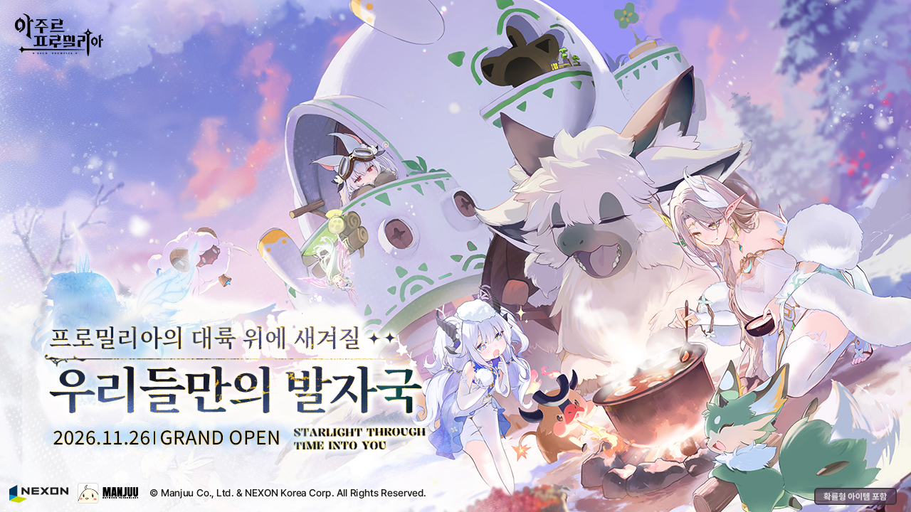

넥슨 아주르 프로밀리아 출시일 11월 26일 확정, 출시 전 이벤트 마감일까지 정리
오늘 인벤을 열었더니 "넥슨 '아주르 프로밀리아', 11월 26일 정식 출시"라는 제목이 걸려 있어서 위키트리와 스마트비즈 기사까지 연달아 읽어 봤는데요, 세 곳 모두 날짜가 똑같더라고요. 그래서 아주르 프로밀리아 출시일이 확정됐다고 보고 이 글을 쓰게 됐어요.
이 글에서는 출시일과 플랫폼, 출시 전에 마감되는 이벤트, 어떤 게임인지, 지난 CBT와 사전등록 이력까지 한 번에 모아 볼게요. 모든 내용은 2026년 10월 23일 기준이에요.

'우리들만의 발자국' 문구 아래에 '2026.11.26 GRAND OPEN'이 적혀 있고, 오른쪽 아래에는 '확률형 아이템 포함' 표기가 붙어 있어요.
이미지 출처: 인벤 (ⓒ Manjuu Co., Ltd. & NEXON Korea Corp.)
아주르 프로밀리아 출시일은 언제예요?
아주르 프로밀리아의 국내 정식 출시일은 2026년 11월 26일 목요일이고, PC와 모바일에서 같은 날 문을 열어요. 오늘이 10월 23일이니까 출시까지 34일 남았네요.
모바일은 구글 플레이, 애플 앱스토어, 갤럭시 스토어에서 받을 수 있고 PC 버전도 같은 날 나와요. 국내 서비스는 넥슨이 맡고, 개발은 '벽람항로'를 만든 만쥬게임즈예요.
스토어 이름은 세 곳이 확인됐지만 PC 쪽 설치 경로는 기사에 나오지 않았거든요. 그래서 출시 당일에는 공식 사이트(azurpromilia.nexon.com)의 공지부터 확인해 보시는 게 좋아요.
출시 전에 챙길 이벤트는 언제 마감돼요?
출시 전에 챙길 이벤트는 11월 11일, 11월 13일, 11월 26일 순으로 마감되고, 출시 뒤까지 이어지는 건 12월 31일 마감인 '키보 캠프 대작전' 하나예요. 날짜 순으로 표에 모아 둘게요.
| 날짜 | 일정 | 내용 |
|---|---|---|
| 11월 11일(수) | 프로밀리아 페스티벌 얼리버드 크리에이터 모집 마감 | 페스티벌에 함께할 얼리버드 크리에이터 모집 |
| 11월 13일(금) | #아출기1126 출시 공유 이벤트 마감 | 공식 X에서 진행, 경품은 갤럭시 탭 S11 울트라·AULA F87 PRO V2 |
| 11월 26일(목) | PC·모바일 정식 출시 / 하찮은 아비 그림 대회 마감 | 그림 대회는 넥슨 피크에서 진행, 경품은 ROG Strix G16·아이패드 프로 13 M5 |
| 12월 4일(금)~6일(일) | AGF 2026 참가 | 일산 킨텍스, 세부 내용은 추후 공개 |
| 12월 31일(목) | 키보 캠프 대작전 마감 | 번영도 미션을 달성하면 받는 '특급 별의 은총 선물상자'·배추닭 키보 코스튬 등 |
오늘 기준으로 남은 날짜를 세어 보면 크리에이터 모집은 19일, 출시 공유 이벤트는 21일, 그림 대회와 출시는 34일, 키보 캠프 대작전은 69일이 남았어요. 앞의 두 개는 3주 안팎이라 생각보다 빨리 닫히니, 참여할 생각이 있다면 지금부터 달력에 표시해 두시길 권해 드립니다.
공유 이벤트는 SNS에 올리는 방식이라 부담이 가장 적고, 그림 대회는 직접 그려야 해서 출시 당일까지 마감이 늦은 만큼 시간을 두고 준비하기 좋죠. 키보 캠프 대작전은 번영도 미션을 채울수록 보상을 받는 구조라 출시 뒤에 시작해도 연말까지 여유가 있어요. 11월 11일 크리에이터 모집은 해당하는 분만 보면 되니, 일반 유저에게는 11월 13일 공유 이벤트가 첫 관문이에요. 11월 26일은 출시일과 그림 대회 마감이 겹치는 날이라, 대회에 낼 분은 출시 전에 작품을 끝내 두는 편이 마음 편하죠.
아주르 프로밀리아는 어떤 게임이에요?
아주르 프로밀리아는 3D 판타지 대륙 '프로밀리아'에서 파트너 생물 '키보'와 함께 탐험하고 싸우는 월드 RPG예요.
스마트비즈 보도 기준으로 키보는 수집해서 데리고 다니는 파트너고, 테스트 버전 기준으로 전투는 캐릭터를 번갈아 바꿔 가며 싸우는 태그 액션이 중심이에요. 한국어 풀더빙도 지원하는데, 성우진은 5월 18일에 김순미·성예원·김예림·박송·채림·조경이 님으로 발표됐어요.
키보와 함께하는 일은 크게 세 갈래로 소개됐어요.
- 이동·작업 : 종류에 따라 탐험 중 탑승할 수 있고, 벌목과 파종을 도와요
- 생활 : 농사, 제작, 하우징
- 함께 즐기는 콘텐츠 : 협동 '위기 토벌', '키보 대전', 보물찾기, 미니게임
이름만 놓고 보면 농사와 하우징은 느긋하게 꾸미는 쪽이고, 협동으로 소개된 '위기 토벌'은 여럿이 함께 싸우는 쪽이라 한 게임 안에서 취향이 갈리는 콘텐츠를 두루 갖춘 구성이에요. 다만 이 내용은 스마트비즈 기사 한 곳의 소개를 바탕으로 한 거라, 세부 시스템은 출시 뒤 실제 화면으로 하나씩 더 짚어 볼 생각이에요.
지금까지 CBT와 사전등록은 어땠어요?
국내 사전등록은 2025년 12월 15일에 시작했고, CBT는 2026년 5월 15일부터 18일까지 PC(윈도우)와 안드로이드로 열렸어요. 보도 기준으로 시기별 흐름을 표에 정리했어요.
| 시기 | 있었던 일 |
|---|---|
| 2025년 12월 15일 | 국내 퍼블리싱 계약 소식과 함께 사전등록 시작 |
| 2026년 3월 | 국내 오프라인 행사 코믹월드 330 일산(3월 14~15일)에서 첫선, 넥슨이 메인 스폰서로 참여 |
| 5월 15~18일 | 국내 CBT (5월 16일부터 설문 진행, 치지직 드롭스는 5월 18일까지) |
| 5월 22일까지 | 사전등록자 추첨 이벤트, 경품은 RTX 5080 |
| 6월 30일까지 | '마이 스티커' 웹 이벤트, 경품은 RTX 5080·구글 기프트카드·아크릴 스탠드 |
| 10월 12일 | PEAK 전용 채널 공개와 '프로밀리아 크리에이터즈' 베타 모집 발표 |
사전등록 보상 이벤트는 모두 끝났으니 지난 이력으로만 봐 두시면 돼요.
흐름을 이어 보면 3월 오프라인 첫선, 5월 CBT, 10월 출시일 발표 순으로 이어져 출시 날짜가 잡혔어요. 풀더빙 성우진이 공개된 5월 18일이 마침 CBT 마지막 날이었다는 점도 같이 기억해 두면 일정이 머릿속에서 정리돼요.
아직 확정되지 않은 정보는 뭐예요?
제가 읽은 국내 기사 세 곳에는 아래 내용이 나오지 않았어요.
확인할 곳: 넥슨 공식 사이트 공지 · 구글 플레이/앱스토어/갤럭시 스토어 상세 페이지
| 항목 | 현재 상태 |
|---|---|
| 출시 시각 | 기사에 없음 |
| 글로벌 출시일 | 영어 오픈 베타 2027년 여름 예정이라는 해외 보도가 있고(일자 미공개), 정식 출시일은 없음 |
| PC·모바일 권장·최소 사양 | 미확인 |
| PS5 출시 | 개발 중이라는 해외 보도는 있으나 국내 출시 플랫폼에는 아직 안 나옴 |
| 현재 사전등록 진행 여부·사전 다운로드 일정 | 확인 못 함 |
| 과금 구조 | 키비주얼에 '확률형 아이템 포함' 표기만 확인, 상세 미확인 |
PS5는 2026년 10월 13일 Inven Global 보도로 개발 중이라는 사실이 알려졌지만 국내 출시 플랫폼에는 아직 안 나왔어요. 글로벌도 영어 오픈 베타가 2027년 여름이라고만 보도됐고 정식 출시일은 없는 상태예요.
아주르 프로밀리아 출시일 정리
11월 26일 PC·모바일 동시 출시라는 큰 줄기는 세 매체가 한목소리였답니다. 저도 11월 13일 공유 이벤트부터 챙길 생각이에요. 출시 시각이 나오면 다시 들고 올게요~
참고한 곳
· 인벤 아주르 프로밀리아 정식 출시 기사
· 위키트리 출시 기사
· 스마트비즈 출시 기사
· Inven Global 사전등록 2천만 돌파·영어 오픈 베타 기사
· 아주르 프로밀리아 공식 사이트
2026.10.23 기준